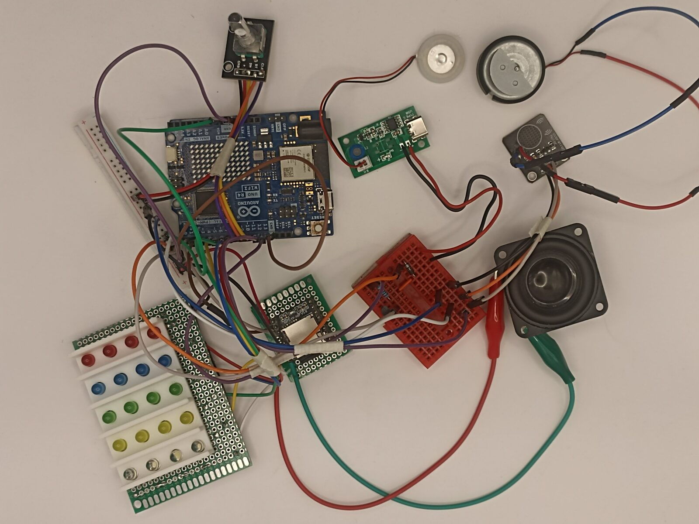
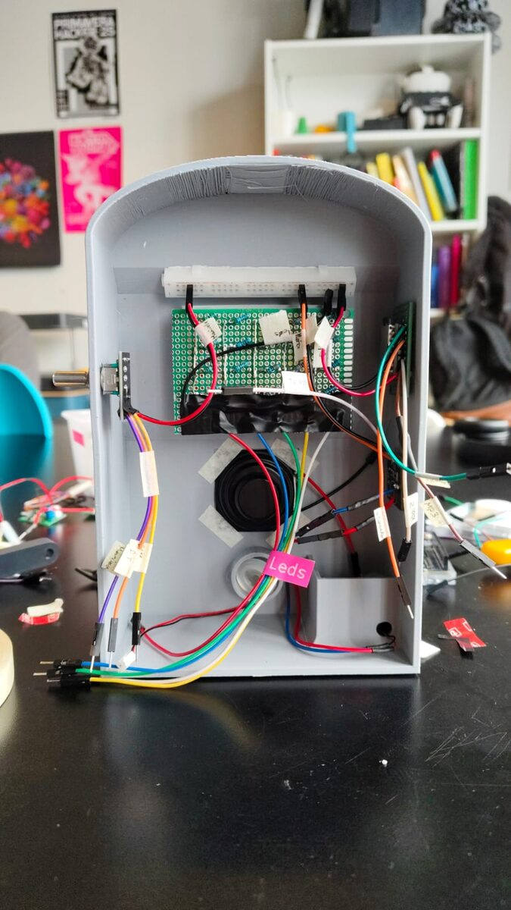
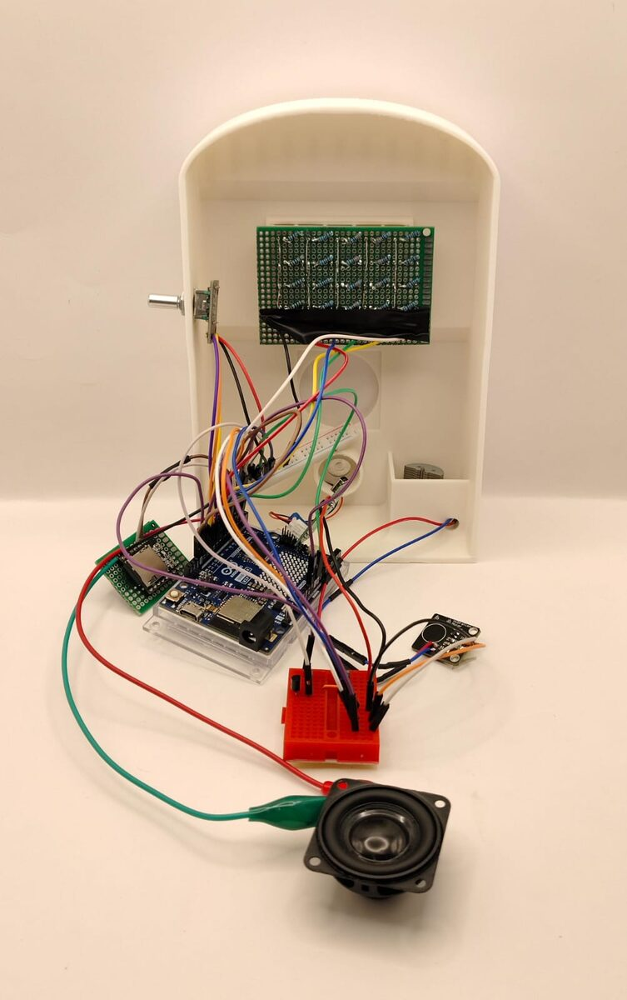

Proyecto de examen · 2025
Máquina Asombrosa
Una tragamonedas que promete mucho y entrega humo. Literalmente.
- Encargo
- Máquina sentimental que represente una figura literaria
- Figura
- Anticlímax
- Equipo
- Braulio Figueroa, Camila Parada, Félix Rodríguez, Miguel Vera
- Código
- C++ sobre Arduino R4 Minima
- Evaluación
- Nota máxima (7,0) en el examen final
El proyecto consiste en una máquina sentimental que representa una figura literaria. Su eje es involucrar al usuario y generar una respuesta en la interacción entre ambas partes: objeto y emoción, acción y reacción, causa y efecto.
La Máquina Asombrosa se parece a una máquina tragamonedas. No tiene ninguna invitación ni promesa evidente, pero te llama a girar su manivela y ver qué pasa.
Figura retórica
Anticlímax
Una decepción abrupta al final de una oración, pasaje o trama: de lo importante o tenso a algo trivial, insignificante o cómico. Queremos decepcionar al usuario, y mientras más expectativa tenga, más se defraudará.
Concepto
Vender humo
Ofrecer algo de escaso o nulo valor haciéndolo pasar por algo de mucho valor. La máquina toma la expresión al pie de la letra: una transacción en la que recibes humo. Todo en ella genera expectativa para después defraudarla.
El encoder rotatorio lee el giro de la manivela. Luces, sonido y vibración construyen la expectativa; el módulo humidificador entrega el humo.
Ver el desarrollo completo en GitHub ↗


Componentes utilizados
- Arduino UNO R4 Minima
- Mini protoboard 400 puntos
- Cables Dupont
- Encoder rotatorio KY-040
- Módulo reproductor MP3
- Motor vibrador PWM
- Motor de vibración de mando Xbox 360 (reutilizado)
- Mini humidificador USB-C 5 V
- Micro servomotor SG90
- Mini parlante 3 W
- LEDs 10 mm